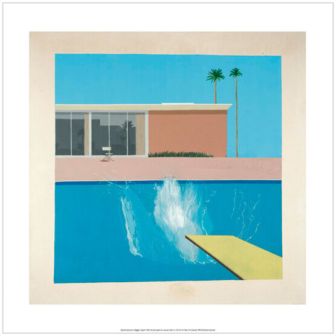
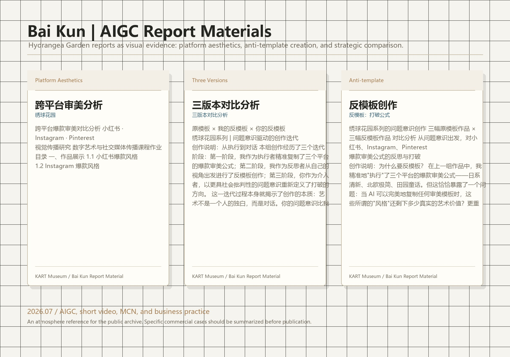

判断
从“AI 能不能做出图像”转向“人如何判断图像是否成立”，把生成结果重新带回人的观看。
她把 AIGC 从生成工具推进到审美判断、平台机制与真实商业实践的交叉处：不是追逐更快的图像，而是训练更清醒的判断。
白坤的成长线不是技法型的，而是判断型的：她不断把艺术史、平台机制、商业案例和个人实践放在同一张桌面上比较。
从“AI 能不能做出图像”转向“人如何判断图像是否成立”，把生成结果重新带回人的观看。
她开始识别平台审美、流量机制和模板化风险，而不是把爆款样式当成天然答案。
AIGC 被她推进到人生商业实践层面：它不只是内容工具，也是观察市场与选择路径的方法。
这一阶段的重点，是把 AI 图片、AI 短视频和内容生态放入同一个判断框架。
她逐渐意识到，Prompt 不是一句技术指令，而是把思考路径交给 AI 之前必须先被人类整理的判断结构。
讨论开始进入 AI 图片、AI 短视频和 MCN 机制，关注的不只是“能不能生成”，而是内容如何进入真实传播链条。
AIGC 在这里被看作商业判断的训练场：每一次生成、筛选和复盘，都在逼近更真实的市场问题。
一张原创 AI 气氛图与一件艺术史作品并置：前者测试生成图像的氛围组织，后者提供色彩、空间与瞬间事件如何成立的判断参照。

这张报告材料图保存三份绣球花园报告的气氛：跨平台审美分析、三版本对比、反模板创作与策略复盘。

2026-07-06 的创作推进，标志着讨论进入更深层：具体商业案例、策略选择、平台生态与个人路径开始连接起来。
对白坤来说，AIGC 的价值不在于替代判断，而在于把判断暴露出来。
她的成长提醒我们：AI 时代真正稀缺的不是更多图像，而是能够在图像、平台和商业现实之间做出选择的人。KART 保存这条线索，是因为它已经不只是艺术学习，而是一个人如何在新工具和新市场里训练自己的判断系统。
KART 以美术馆的方式保存一个人的变化：不仅保存作品，也保存判断力如何被训练出来。
当 AI 变得足够快，人反而更需要知道自己为什么选择。
白坤的档案是一条非常当代的成长线：从图像生成进入平台文化，从平台文化进入商业策略，再从商业策略回到个人实践。她的价值不在于追上某个工具，而在于逐渐建立一种可以迁移的审美与商业判断。